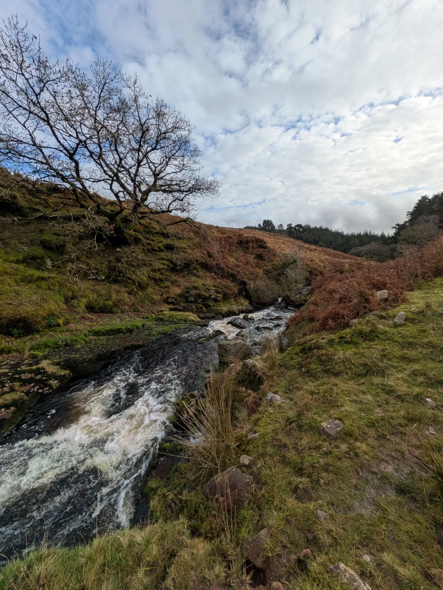
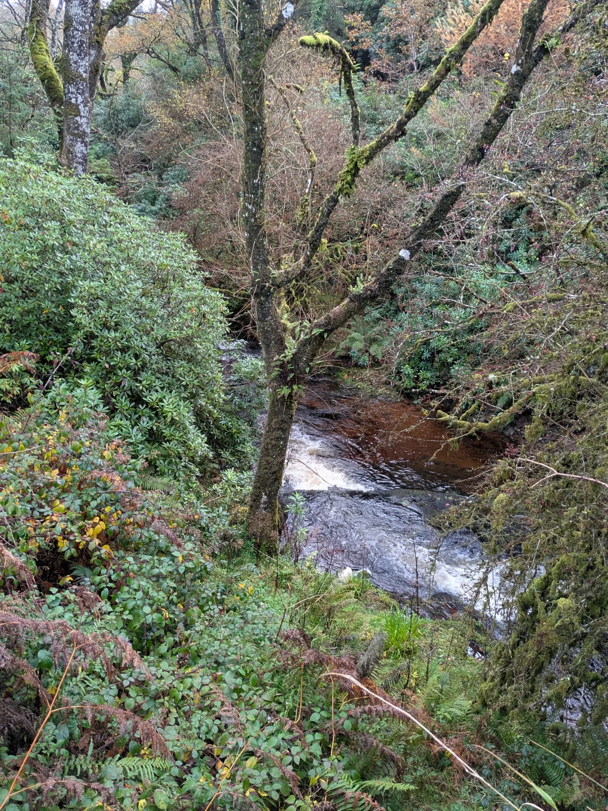
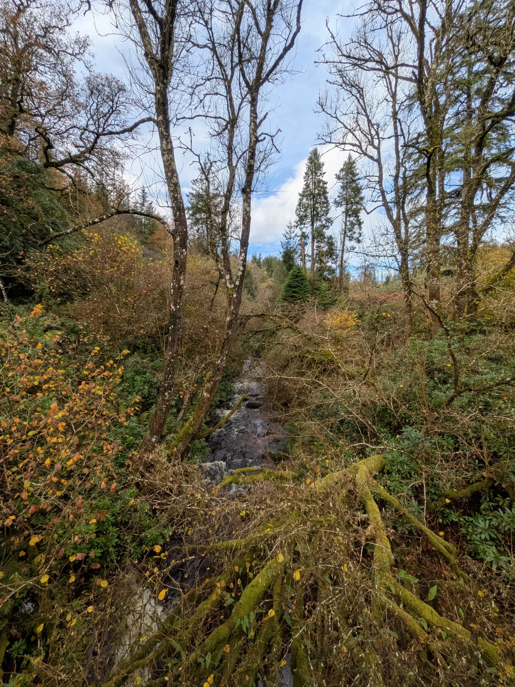

49th Cork · Ballincollig
Welcome to 49th Cork.
Adventure, friendship and skills for life — proudly serving young people and families in Ballincollig since 1975.

Keep up to date
What’s happening
Stories from the Group, upcoming activities and useful information for our families.
Our sections
Find your adventure
From a first night at Beavers to bigger Venture adventures, there is always something new to discover.

Skills for life
More than a weekly meeting.
Scouting is about doing: getting outdoors, learning practical skills, working as a team and taking on challenges together.
Discover 49th Cork →